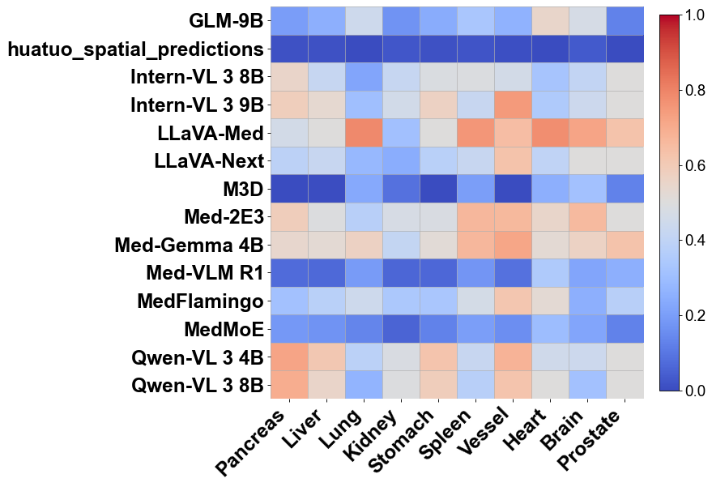
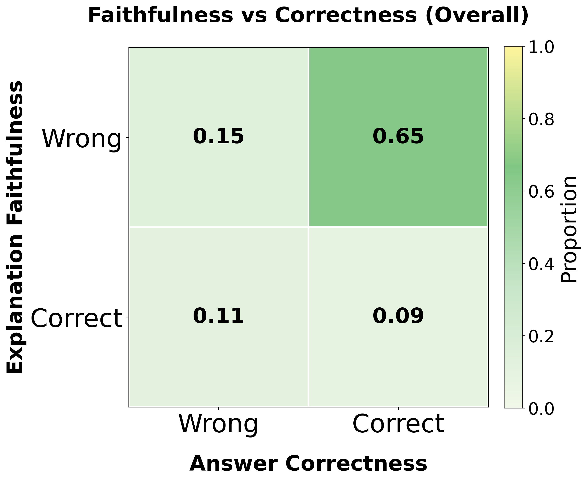
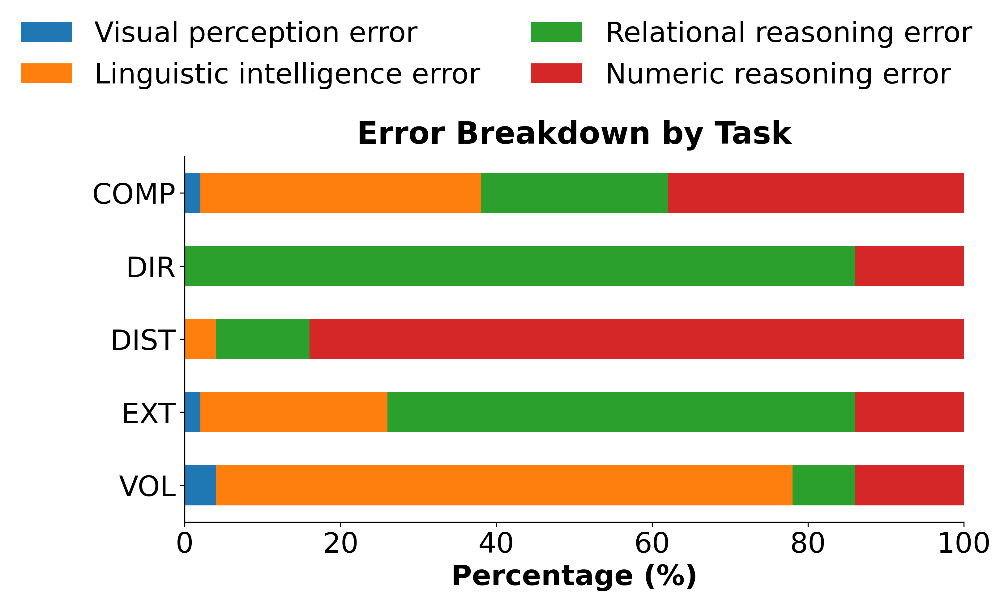
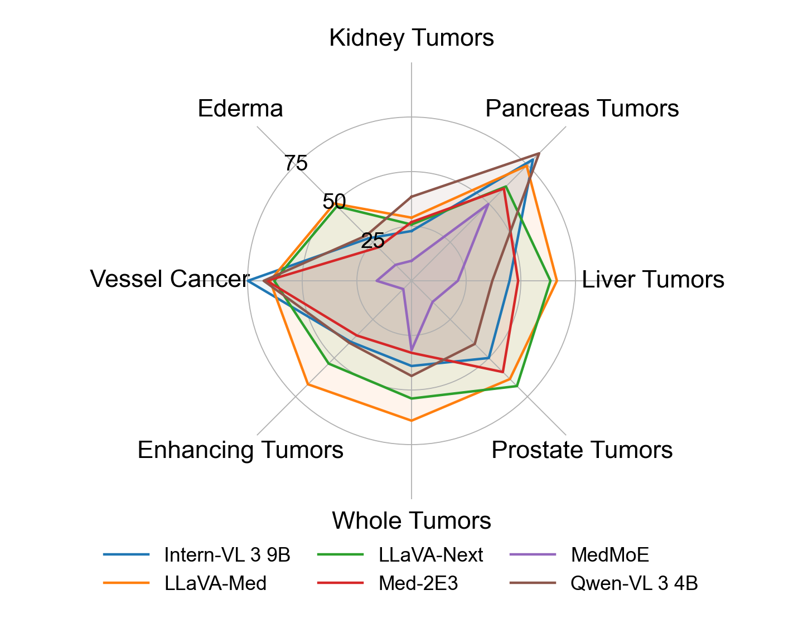
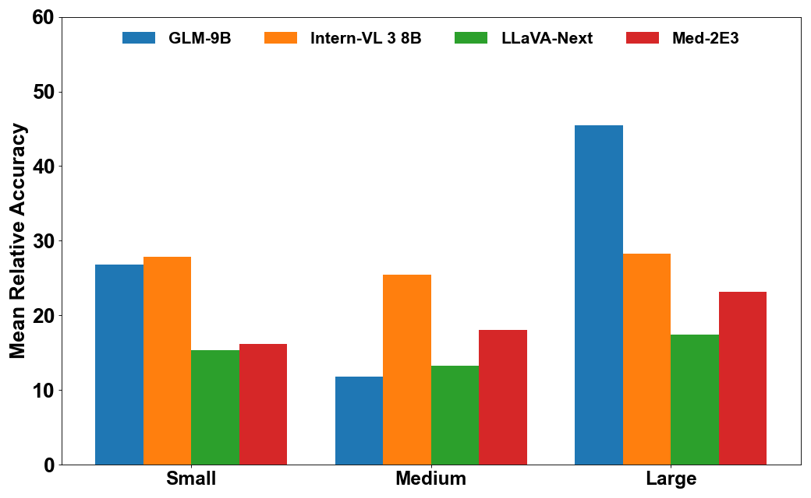

 Carnegie Mellon University
Carnegie Mellon University
 Yale University
4
Yale University
4 Northwestern University
Northwestern University
@misc{trinh2026medicaldiagnosticsmedicalmultimodal,
title={Beyond Medical Diagnostics: How Medical Multimodal Large Language Models Think in Space},
author={Quoc-Huy Trinh and Xi Ding and Yang Liu and Zhenyue Qin and Xingjian Li and Gorkem Durak and Halil Ertugrul Aktas and Elif Keles and Ulas Bagci and Min Xu},
year={2026},
eprint={2603.13800},
archivePrefix={arXiv},
primaryClass={cs.CV},
url={https://arxiv.org/abs/2603.13800},
}
This work was supported in part by U.S. NSF grants DBI-2238093, DBI-2422619, IIS-2211597, and MCB-2205148.